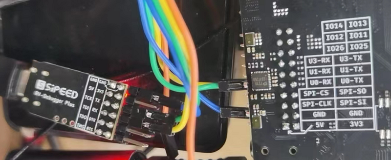
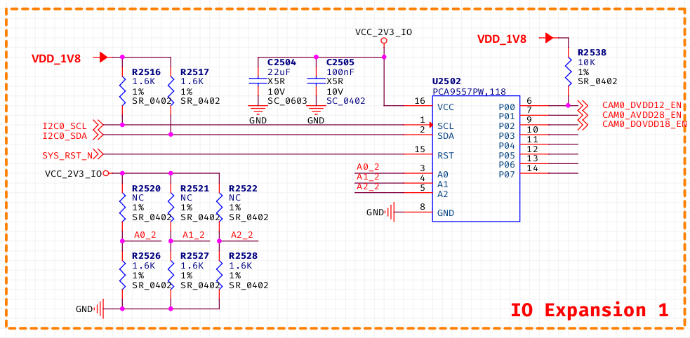
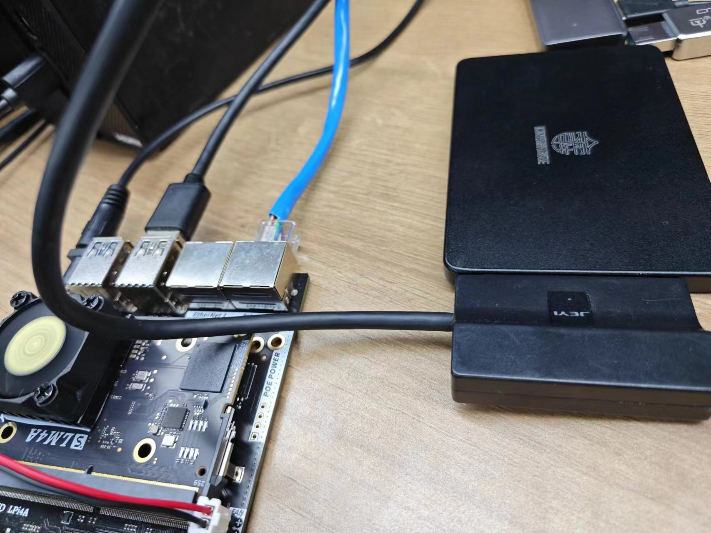
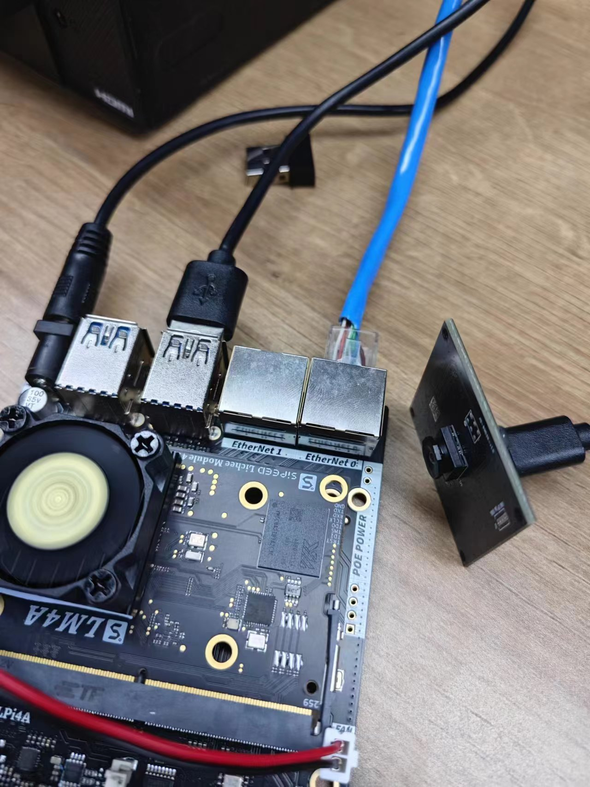
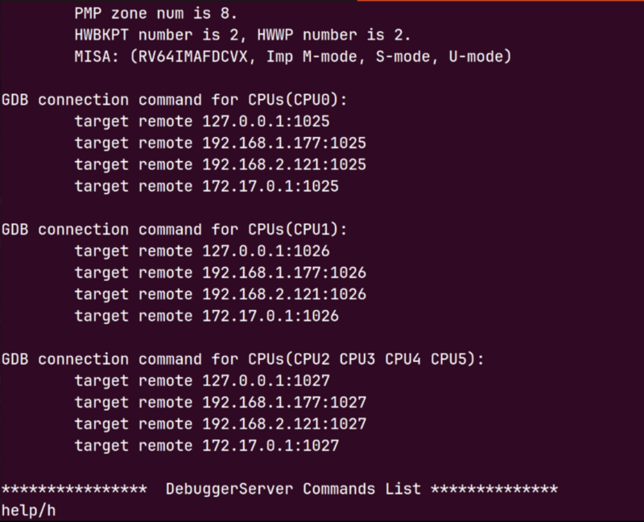
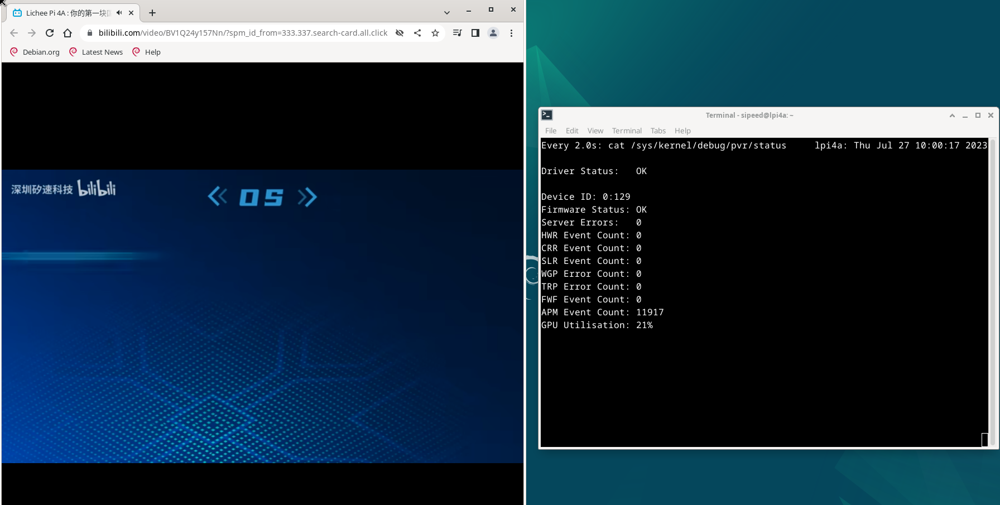

中文
中文外设使用
更新历史
| 日期 | 版本 | 作者 | 更新内容 |
|---|---|---|---|
| 2023-09-12 | v1.3 | ztd |
|
| 2023-08-18 | v1.2 | ztd |
|
| 2023-07-17 | v1.1 | ztd |
|
| 2023-05-08 | v1.0 | wonder |
|
SoC 相关
CPU 运行频率
sudo cat /sys/devices/system/cpu/cpu*/cpufreq/cpuinfo_cur_freq
单位为 KHz
注意系统自带温控策略，当系统过于空闲或者温度过高时，都会降频。请保持良好散热，使得 CPU 在 60 度以下，获得最佳性能。
芯片温度
cat /sys/class/thermal/thermal_zone0/temp
单位为0.001摄氏度
CPU超频
TH1520 默认最大运行频率为 1.85GHz，但是经过初步测试发现，有 80% 左右的芯片可以在 2GHz 运行，有 50% 左右的芯片可以在 2GHz 通过压力测试。
这里放出简易超频步骤，仅供参考，不对稳定性和安全性做保证。
查看/boot下的文件：
fw_dynamic.bin #opensbi
Image #kernel image
kernel-release #commit id of kernel
light_aon_fpga.bin #fw for E902 aon
light_c906_audio.bin #fw for C906 audio
light-lpi4a.dtb #1.85GHz dtb
light-lpi4a_2Ghz.dtb #2GHz overclock dtb
light-lpi4a-ddr2G.dtb #history dtb
将 light-lpi4a_2Ghz.dtb 拷贝覆盖为 light-lpi4a.dtb，重启，即可修改开机后的最大频率。
注意有一定几率这样修改后无法启动，此时需要重新烧录固件来恢复。
如果成功启动，则可以查看下面的数值确认是否已成功超频：
sudo cat /sys/devices/system/cpu/cpu0/cpufreq/cpuinfo_max_freq
PWM
以散热风扇所接的 PWM1 为例，可以通过如下代码获取风扇转速：
cat /sys/class/hwmon/hwmon0/pwm1
风扇的PWM转速值范围在0到255之间，值越大风扇转速越大。你可以向PWM使能写入1来启用手动调速，并设置转速（如255）：
echo 0 > /sys/class/hwmon/hwmon0/pwm1_enable
echo 255 > /sys/class/hwmon/hwmon0/pwm1
使用以下命令可以恢复自动调速：
echo 2 > /sys/class/hwmon/hwmon0/pwm1_enable
或是完全禁用风扇：
echo 0 > /sys/class/hwmon/hwmon0/pwm1_enable
GPIO
LicheePi 4A 板载 2x10pin 插针，其中有 16 个原生 IO，包括 6 个普通 IO，3 对串口，一个 SPI。
注意：SOC的所有原生IO均是1.8V电平，请注意电平转换。
插针上的串口输入侧已经进行了1/2分压处理，可以接3.3V的串口。
TH1520 SOC 具有4个GPIO bank，每个bank最大有32个IO：
| Bank | Address | kernel io num |
|---|---|---|
| GPIO0 | 0xffec005000 | 456-487 |
| GPIO1 | 0xffec006000 | 424-455 |
| GPIO2 | 0xffe7f34000 | 392-423 |
| GPIO3 | 0xffe7f38000 | 360-391 |
| AO_GPIO | 0xfffff41000 | 328-359 |
| AO_GPIO4 | 0xfffff52000 | 296-327 |
| AUDIO_GPIO | 0xffcb013000 | - |
其中 0x0 偏移处的 4Byte（32bit）是 GPIO 数据寄存器，0x4 偏移处的 4Byte（32bit）是 GPIO 方向寄存器
LicheePi 4A上的插针的 GPIO 对应关系为（以俯视底板正面为视角，TOP为左侧，BOTTOM为右侧）：

以文档的标注为准，内测版的丝印标注可能有误
GPIO 操作：
注意，可能需要事先设置 pinmux
num=xxx
echo ${num} > /sys/class/gpio/export
echo out > /sys/class/gpio/gpio${num}/direction
echo 1 > /sys/class/gpio/gpio${num}/value
echo 0 > /sys/class/gpio/gpio${num}/value
GPIO 号的对应关系如下图所示：

比如要操作插针上的4个 GPIO，对应关系如下，将上述代码的num改为想要操作的 GPIO 脚对应的数字即可:
| num | IO Number |
|---|---|
| 427 | IO 1_3 |
| 428 | IO 1_4 |
| 429 | IO 1_5 |
| 430 | IO 1_6 |
也可以直接操作寄存器：
devmem 可以从此处下载编译：https://github.com/VCTLabs/devmem2/blob/master/devmem2.c
./devmem 0xffe7f38000 w
系统内GPIO信息查看：
sipeed@lpi4a:~$ sudo cat /sys/kernel/debug/gpio
下面是示例结果:

接下来，以底板插针上的 GPIO1_3 为例，我们通过 libgpiod 在用户空间操作 gpio。首先安装 libgpiod：
sudo apt update
sudo apt install libgpiod-dev
使用 vi gpio.c 命令，将下面的代码写入文件：
#include <stdio.h>
#include <stdlib.h>
#include <unistd.h>
#include <gpiod.h>
int main()
{
int i;
int ret;
struct gpiod_chip * chip;
struct gpiod_line * line;
chip = gpiod_chip_open("/dev/gpiochip1");
if(chip == NULL)
{
printf("gpiod_chip_open error\n");
return -1;
}
line = gpiod_chip_get_line(chip, 3);
if(line == NULL)
{
printf("gpiod_chip_get_line error\n");
gpiod_line_release(line);
}
ret = gpiod_line_request_output(line,"gpio",0);
if(ret < 0)
{
printf("gpiod_line_request_output error\n");
gpiod_chip_close(chip);
}
for(i = 0; i < 10; i++)
{
gpiod_line_set_value(line,1);
sleep(1);
gpiod_line_set_value(line,0);
sleep(1);
}
gpiod_line_release(line);
gpiod_chip_close(chip);
return 0;
}
通过以下命令编译：
gcc gpio.c -I /usr/include/ -L /usr/lib/riscv64-linux-gnu/ -lgpiod -o gpio
然后以 root 权限执行：
sudo ./gpio
此时用万用表测量底板上的 IO1_3 引脚，可以发现每隔一秒该引脚电压会发生变化。
UART
系统串口
LicheePi 4A 的系统串口是 UART0,在侧边插针中有引出。
你可以使用 USB 转串口模块连接该串口，即 U0-RX 和 U0-TX，注意交叉连接，以及 GND 连接。

连接完成后，即可使用串口工具进行通信，Windows 下推荐 XShell，mobaterm，Linux下推荐 minicom
设置串口波特率为 115200，即可在串口终端下登录并进行指令操作：
注：刚连接后可以敲几个回车查看是否有反应，如果没有反应则检查接线或者串口配置

一般串口
LicheePi 4A的侧边插针中还引出了 UART1/2/3, 同样可以操作。
默认镜像中仅使能了 UART1, 其它串口可能需要重新配置设备树操作。
注意：SOC串口电平为1.8V，刚好处于3.3V的高电平阈值附近，可能某些串口模块无法正确输入输出，建议使用我们提供配套串口模块，或者微调其他串口模块的3.3V电压到2.8V
查看串口设备
ls /dev/ttyS*
查看串口的波特率等信息
stty -F /dev/ttyS1 -a
设置串口波特率、数据模式
stty -F /dev/ttyS1 ispeed 115200 ospeed 115200 cs8
查看串口数据
cat /dev/ttyS1
发送串口数据
echo "12345" > /dev/ttyS1
其它方法
也可以使用minicom，或者pyserial库进行串口操作，请用户自行查找相关资料使用。
I2C
LicheePi 4A 上有多个 I2C 设备（I2C0/1/2/3），其中 0/1/3 用于连接 I2C IO 扩展芯片，I2C2 预留在对外插针上。
这里我们使用 i2c-tools 来进行 i2c 验证操作，镜像默认预装了 i2c-tools:
sipeed@lpi4a:/usr$ ls /sbin/i2c*
/sbin/i2c-stub-from-dump /sbin/i2cdetect /sbin/i2cdump /sbin/i2cget /sbin/i2cset /sbin/i2ctransfer
列出所有I2C总线：
sipeed@lpi4a:~$ /sbin/i2cdetect -l
i2c-0 unknown Synopsys DesignWare I2C adapter N/A
i2c-1 unknown Synopsys DesignWare I2C adapter N/A
i2c-2 unknown Synopsys DesignWare I2C adapter N/A
i2c-3 unknown Synopsys DesignWare I2C adapter N/A
i2c-4 unknown Synopsys DesignWare I2C adapter N/A
i2c-5 unknown Synopsys DesignWare I2C adapter N/A
i2c-6 unknown Synopsys DesignWare I2C adapter N/A
i2c-7 unknown DesignWare HDMI N/A
检测 I2C 总线上的设备，可见 PCA9557PW 的 I2C 地址为 0x18，与原理图相符：
sipeed@lpi4a:~$ sudo /sbin/i2cdetect -r -y 0
0 1 2 3 4 5 6 7 8 9 a b c d e f
00: -- -- -- -- -- -- -- --
10: -- -- -- -- -- -- -- -- UU -- -- -- -- -- -- --
20: -- -- -- -- -- -- -- -- -- -- -- -- -- -- -- --
30: -- -- -- -- -- -- -- -- -- -- -- -- -- -- -- --
40: -- -- -- -- -- -- -- -- -- -- -- -- -- -- -- --
50: -- -- -- -- -- -- -- -- -- -- -- -- -- -- -- --
60: -- -- -- -- -- -- -- -- -- -- -- -- -- -- -- --
70: -- -- -- -- -- -- -- --

此外还可以使用 i2cdump 来 dump 指定 i2c 地址的所有寄存器，用 i2cget 来读出指定 i2c 地址的指定寄存器值，用 i2cset 来写入指定 i2c 地址的指定寄存器值。
不过由于 IO 扩展芯片已经被内核使用，所以无法直接使用这些命令验证。用户可以自行在 I2C2 上外接外设来验证。
SPI
LicheePi4A上预留了两路SPI，一路是背面空贴的SPI Flash焊盘，一路是插针上的SPI。
sipeed@lpi4a:~$ ls /dev/spidev2.0
/dev/spidev2.0
SPI 常用的 ioctl 命令：
- SPI_IOC_MESSAGE：用于发送和接收 SPI 消息，可以用于读写数据、控制设备等操作
- SPI_IOC_WR_MODE：用于设置 SPI 设备的工作模式, 如 CPOL、CPHA 等
- SPI_IOC_RD_MODE：用于读取 SPI 设备的工作模式
- SPI_IOC_WR_LSB_FIRST：用于设置 SPI 设备的字节顺序，即最高位先传输还是最低位先传输
- SPI_IOC_RD_LSB_FIRST：用于读取 SPI 设备的字节顺序
- SPI_IOC_WR_BITS_PER_WORD：用于设置 SPI 设备的数据位宽
- SPI_IOC_RD_BITS_PER_WORD：用于读取 SPI 设备的数据位宽
- SPI_IOC_WR_MAX_SPEED_HZ：用于设置 SPI 设备的最大时钟频率
- SPI_IOC_RD_MAX_SPEED_HZ：用于读取 SPI 设备的最大时钟频率
- SPI_IOC_WR_MODE32：用于设置 SPI 设备的 32 位模式, 如 CPOL、CPHA 等
- SPI_IOC_RD_MODE32：用于读取 SPI 设备的 32 位模式
以上是一些常用的 SPI 设备 ioctl 命令，可以用于配置和控制 SPI 设备的各种参数。
打开/关闭 SPI 设备：
int open(const char *pathname, int flags);
int close(int fd);
需要引用的头文件：
#include<fcntl.h>
#include<unistd.h>
示例代码：
#include <stdint.h>
#include <unistd.h> // C 语言标准头文件，定义了 POSIX API 的一部分，如文件操作、进程管理等
#include <stdio.h>
#include <stdlib.h>
#include <string.h>
#include <getopt.h>
#include <fcntl.h> // C 语言头文件，定义了文件控制相关的宏和函数
#include <sys/ioctl.h> // C 语言头文件，定义了 ioctl 函数和相关宏
#include <linux/types.h> // Linux 内核头文件，定义了内核中使用的一些基本数据类型
#include <linux/spi/spidev.h> // Linux SPI 子系统头文件，定义了 SPI 设备驱动程序使用的数据结构和 ioctl 命令
#define DATA_NUM 2 // 自定义数据长度
#define CHECK(ret, str) if (ret < 0) {printf("%s\r\n", str); return ret;}
static uint8_t bits = 8;
static uint32_t speed = 1000000; // 1M Hz
static int mode = 0;
int main(int argc, char *argv[]) {
int ret, fd;
fd = open("/dev/spidev2.0", O_RDWR);
CHECK(fd, "can't open device"); // 打开具体 spi 设备
mode = SPI_MODE_0 | SPI_CS_HIGH;
ret = ioctl(fd, SPI_IOC_WR_MODE32, &mode); //设置 SPI 模式
CHECK(ret, "can't set spi mode");
ret = ioctl(fd, SPI_IOC_RD_MODE32, &mode); //获取 SPI 模式设置
CHECK(ret, "can't get spi mode");
ret = ioctl(fd, SPI_IOC_WR_BITS_PER_WORD, &bits); //设置 SPI 的 bit/word
CHECK(ret, "can't set bits per word");
ret = ioctl(fd, SPI_IOC_RD_BITS_PER_WORD, &bits); //获取 SPI 的 bit/word 设置
CHECK(ret, "can't get bits per word");
ret = ioctl(fd, SPI_IOC_WR_MAX_SPEED_HZ, &speed); //设置 SPI 的最大传输速度
CHECK(ret, "can't set max speed hz");
ret = ioctl(fd, SPI_IOC_RD_MAX_SPEED_HZ, &speed); //获取 SPI 的最大传输速度设置
CHECK(ret, "can't get max speed hz");
printf("spi mode: %d\n", mode);
printf("bits per word: %d\n", bits);
printf("max speed: %d Hz (%d KHz)\n", speed, speed/1000);
//数据传输
uint8_t tx[] = {0x11, 0x22};
uint8_t rx[DATA_NUM] = {0};
struct spi_ioc_transfer tr = {
.tx_buf = (unsigned long)tx, //定义发送缓冲区指针
.rx_buf = (unsigned long)rx, //定义接收缓冲区指针
.len = DATA_NUM,
.delay_usecs = 0,
.speed_hz = speed,
.bits_per_word = bits
};
ret = ioctl(fd, SPI_IOC_MESSAGE(1), &tr); //执行 spidev.c 中 ioctl 的 default 进行数据传输
CHECK(ret, "can't send spi message");
printf("tx: %.2X %.2X\r\n", tx[0], tx[1]);
printf("rx: %.2X %.2X\r\n", rx[0], rx[1]);
close(fd);
return ret;
}
USB
USB SSD
连接好 USB SSD：

在系统中可以看到相应的设备：

USB 网卡
连接好 USB 网卡：

右上角的网络图标会变为已连接有线网的状态：

终端中使用sudo ifconfig命令，也可以看到相应设备的信息：

USB 摄像头
连接好 USB 摄像头：

安装 guvcview 后，使用相应的命令，即可看到 USB 摄像头的图像流：
sudo apt-get install guvcview
guvcview

按下 Ctrl+C 或点击 guvcview 窗口的 quit 按钮都可以结束图像流。
也可以使用 fswebcam 来直接在命令行中 dump USB 摄像头的图像。
sudo apt-get install fswebcam
fswebcam /dev/video0 image.jpg
若要让 USB 摄像头自动存图，以下给出一个参考脚本。该脚本使用 uvccapture 工具，可以方便地根据需要调整拍摄参数。
首先安装这个工具
sudo apt install uvccapture
这个工具支持各种参数，使用 -x -y 调整拍摄分辨率，-B调整亮度，-C调整对比度，-S调整饱和度，-o可以指定拍摄图像存储路径，具体使用参考下面的脚本代码：
#!/bin/bash
# 检查是否传入了间隔时间参数
if [ -z "$1" ]; then
echo -e "未指定间隔时间参数，默认使用1秒间隔"
interval=1
else
interval=$1
fi
# 检查是否传入了输出文件路径参数
if [ -z "$2" ]; then
echo -e "未指定输出文件路径参数，默认输出到当前目录下"
output_file="$PWD"
else
output_file=$2
fi
# 检查是否传入了拍摄次数参数
if [ -z "$3" ]; then
echo -e "未指定拍摄次数，默认拍摄10张"
num_executions=10
else
num_executions=$3
fi
echo -e "脚本开始执行，按下q键停止"
for ((i = 1; i <= num_executions; i++)); do
echo -e "capture img $i"
uvccapture -x640 -y480 -m -o$output_file/$image$i.jpg
# 间隔指定时间再拍照
sleep $interval
# 按下q键退出
read -t 1 -n 1 key
if [[ $key = "q" ]]; then
break
fi
done
echo -e "脚本执行结束"
上述脚本中也可以使用 fswebcam 来操作，做相应更改即可。
USB 声卡
TODO
ETH
LicheePi4A 具有双千兆网口，其中 Eth0 还具备 PoE 功能。
TODO
PoE
LicheePi 4A的Ethernet 0接口具有PoE功能，可通过PoE实现供电。
PoE供电模块需要自行购买，使用5V电压，35.6mm长度的规格，可以通过搜索“5V PoE 插针”关键词搜索得到。
当目视方向正对“POE POWER”标识时，针脚左边4根针脚定义从左到右依次为：VA1、VA2、VB1、VB2，右边为：GND、5VIN。
Speaker Audio
LicheePi 4A 上有两个模拟硅麦，使用 ES7210 CODEC，以及有一路板载的扬声器，和立体声耳机，使用 ES8156 CODEC。
注：板载扬声器与立体声耳机使用了互斥设计，插入耳机后，音频输出自动切换到耳机，板载扬声器失能。
使用 aplay 和 arecord 可以进行简易录放测试， 注意板载扬声器是右声道。
#!/bin/bash
echo "Play Test Audio"
aplay /usr/share/sounds/alsa/Side_Right.wav
# Record Audio
echo "Start record auido, auto replay after 3 seconds"
arecord -Dhw:0,1 -d 3 -r 48000 -f S16_LE -t wav test.wav & > /dev/null &
sleep 4
# Play Audio
aplay test.wav
echo "Start Play"
你还可以使用alsa相关工具，如alsamixer，进行音量调整等操作。
HDMI 音频
注：早期镜像的HDMI音频不生效，请升级到较新版本使能HDMI音频功能。
点击屏幕右上角的喇叭图标，进入 Audio mixer，可以看到下面的界面：

名字为 Built-in Audio 设备即 HDMI 音频，可以在这个界面点击它对应的绿色对勾图标进行音频设备切换，也可以在直接单击小喇叭图标后进行设备的切换。
若确认连接无误，且使用的 HDMI 显示器支持 HDMI 音频功能，但没有在设备列表中看到相应设备，可以尝试运行以下命令：
systemctl --user restart pulseaudio.service
MIPI CSI
LicheePi 4A 具有 CAM0/CAM1/CAM2 三个摄像头接口， CAM0 最大 4lane，CAM1/2 为 2lane，默认使用 CSI0 接口，接 OV5693 摄像头。
连接方式如下图所示，使用 CSI0 接口，摄像头金手指面朝下连接：

目前暂时需要烧录专用的镜像测试，在文档镜像集合页面中的百度网盘，下载 /image/latest_20230714/LPI4A_YOCTO_CAM.zip 镜像文件。
烧录后，进入到 /usr/share/csi_hal/ 目录下，运行如下命令：
./cam_demo_simple 2 0 1 0 640 480 1 30
运行完成后，可以在当前目录看到dump下来的拍摄照片，典型命名为 demo_save_img_OV5693_ch0_0_* ，分辨率为640*480(当前仅支持640*480分辨率)，格式为 YUV420SP(NV12)，该格式下UV分量交织存储， bit depth 为 8bit，查看时注意相关参数配置是否正确。
Linux 下可以使用 YUView 设置相关参数查看图片；此外，还可以使用 python 处理相关参数后查看图片，参考代码如下：
import numpy as np
import cv2
class nv12_to_jpg:
def __init__(self):
return
def to_jpg(self, yuv_path, resolution):
width, height = resolution
with open(yuv_path, 'rb') as f:
yuvdata = np.fromfile(f, dtype=np.uint8)
self.input_file=yuv_path
cv_format = cv2.COLOR_YUV2RGB_NV21
bgr_img = cv2.cvtColor(yuvdata.reshape((height*3//2, width)), cv_format)
return bgr_img
def save(self, img_data, output_path):
cv2.imwrite(output_path, img_data)
if __name__ == "__main__":
# 例：将10bit raw格式的图像转换为jpg格式
file_name = input("请输入 raw 图片的文件名：")
input_str = input("width 和 hight，用空格分隔：")
width, height = map(int, input_str.split())
img = nv12_to_jpg()
jpg_data = img.to_jpg(file_name, (width, height))
img.save(jpg_data, file_name+'nv12tojpg.jpg')
MIPI DSI
LicheePi 4A 具有 MIPI DSI0 接口，支持 4K 视频输出，可以选配 10.1 寸 1280x800 或者 1920x1200 的屏幕。
连接方式如下图，两根 fpc 软排线均为下接（排线末端金属触点的那一面朝下），其中触摸屏的转接小板在连接时需要注意方向，确认ToLPi4A 的那一头连接LPi4A的触摸软排线，ToLcdTP 的那一头连接屏幕：
软排线金属触点面示意图：

注意在连接前，先拨起接口上用于固定排线的黑色翻盖，确认接好后再拨下。
触摸屏软排线连接：


MIPI 屏软排线连接：

确认连接无误后，使用支持 MIPI 屏幕的固件，开机即可看到 MIPI 屏幕显示。
若只使用 MIPI 屏幕，可以在系统设置中关闭 HDMI 显示，将 MIPI 屏幕设置为主屏幕，也可使用以下命令：
xrandr --output HDMI-1 --off
xrandr --output DSI-1 --rotate normal --primary
上述命令中 rotate 参数为屏幕的旋转方向，normal 表示为不旋转，即竖屏显示，若要继续横屏显示可以改为 left 或者 right。
若同时使用 MIPI 屏幕和 HDMI 屏幕，也可以根据上述命令来设置主屏幕和两个屏幕间的关系，例如下面的命令，将 HDMI 设置为主屏幕，MIPI 屏幕设置为主屏幕下方的扩展屏幕且为横屏显示：
xrandr --output HDMI-1 --auto --primary
xrandr --output DSI-1 --rotate left --below HDMI-1
上述的屏幕标识符和可供设置的分辨率可以直接输入 xrandr 命令来查看。
若修改设置后发现触摸屏的坐标不对，可以按照下面的步骤修正：
查看触摸屏设备对应的 ID
xinput

这里可以看到是触摸屏设备 Goodix 7，那么则输入下面命令，将触摸设备映射到正确的屏幕上：
xinput map-to-output 7 DSI-1
同样的，根据 ID，也可以使用下列命令来关闭相应的触摸设备：
xinput disable 7
若只使用 HDMI 屏幕，先断电，将 MIPI 屏幕和触摸板的软排线都拔掉后再上电。再运行下面的命令（需要切换到 root 用户执行，直接 sudo 可能会遇到权限不够的问题）：
echo off > /sys/class/drm/card0-DSI-1/status
JTAG
在核心板上预留了 JTAG 接口，但需要自己将 GND，TDI，TDO，TMS，TCK 飞线引出，需要引出的线示意图如下：

连接调试器前，确定调试器处于 CKLink 模式。接下来，以SLogic Combo 8 和 RV-Debugger Plus 为例。
对于 SLogic Combo 8，请参考相应文档切换为CKLink模式。
对于 RV-Debugger Plus，请参考该仓库刷入 CKLink 专用固件。注意，使用时最好再接电平转换芯片，直连有烧毁风险。
完成上述步骤后，通过排针用杜邦线连接到调试器

连接到 JTAG 调试器后，在串口中使用 memtool 工具设置一下 pinmux（这一步是在开发板上执行，memtool工具也是在开发板中安装）：
sudo apt install memtool
sudo memtool mw 0xfffff4a404 0
该 pinmux 设置会在关机后失效。因为 JTAG 引脚用作了 USB 路选的功能，在每次调试时设置一下 pinmux 即可。
接下来下载安装 debug server，在平头哥官网下载。
下载完成后，参考平头哥官方文档安装。
确认连接好设备，并且正确设置 pinmux 之后， 以 Linux 为例，使用命令 DebugServerConsole 打开 DebugServerConsole：

即可看到成功连接：

GPU
使用命令以下命令可以实时查看 GPU 的状态：
sudo watch cat /sys/kernel/debug/pvr/status
在 xfce 桌面下，GPU 的状态如下：

使用 Chromium 浏览器播放视频时，GPU 的状态如下：

NPU
注意：使用 NPU 驱动，需要使用20230920以上版本镜像，该镜像开机会自动加载 NPU 相关驱动。
LicheePi4A 板载了一颗支持 4TOPS@INT8 通用 NNA 算力，主频 1GHz 的 NPU。Wiki 中包含的支持 NPU 的示例如下：
| 示例名称 | 示例功能 | 使用模型 | 接口 | HHB版本 |
|---|---|---|---|---|
| Mobilenetv2 做图像分类 | 图像分类 | mobilenetv2 | c/c++ | 2.4及以上 |
| YOLOv5 做目标检测 | 目标检测 | YOLOv5 | python | 2.4及以上 |
| RTMPose 做姿态估计 | 姿态估计 | RTMPose | python | 2.6及以上 |
为了将上述示例中的模型交叉编译为 LicheePi4A 上的可执行程序，我们首先需要在自己的电脑上搭建 HHB 开发环境。
推荐环境：ubuntu20.04 系统，Docker 使用20.10.21版本。推荐使用 Docker 镜像来搭建环境。
环境配置
开发板配置
SHL 库安装
使用 pip 安装
pip3 install shl-python
安装后，使用 --whereis 查看安装位置
python3 -m shl --whereis th1520
# 若使用纯 CPU 推理，则替换为 python3 -m shl --whereis c920
根据打印的位置，将目录中的动态库复制到 /usr/lib 目录中，比如，打印的是：
/home/sipeed/ort/lib/python3.11/site-packages/shl/install_nn2/th1520
可以使用复制命令：
sudo cp /home/sipeed/ort/lib/python3.11/site-packages/shl/install_nn2/th1520/lib/* /usr/lib/
python 虚拟环境
需要先安装 python 虚拟环境，再使用 pip3 安装 python 包。
使用如下命令，安装 venv 包，用于创建python虚拟环境（以在 root 目录中创建 python 虚拟环境为例）：
sudo -i
apt install python3.11-venv
cd /root
python3 -m venv ort
source /root/ort/bin/activate
HHB-onnxruntime 安装
HHB-onnxuruntime 是移植了 SHL 后端（execution providers），让 onnxruntime 能复用到 SHL 中针对玄铁 CPU 的高性能优化代码。
CPU 版本
wget https://github.com/zhangwm-pt/onnxruntime/releases/download/riscv_whl_v2.6.0/hhb_onnxruntime_c920-2.6.0-cp311-cp311-linux_riscv64.whl
pip install hhb_onnxruntime_c920-2.6.0-cp311-cp311-linux_riscv64.whl
NPU 版本
wget https://github.com/zhangwm-pt/onnxruntime/releases/download/riscv_whl_v2.6.0/hhb_onnxruntime_th1520-2.6.0-cp311-cp311-linux_riscv64.whl
pip install hhb_onnxruntime_th1520-2.6.0-cp311-cp311-linux_riscv64.whl
x86主机配置
首先要在自己的电脑上安装 Docker，先卸载可能存在的 Docker 版本：
sudo apt-get remove docker docker-engine docker.io containerd runc
安装Docker依赖的基础软件：
sudo apt-get update
sudo apt-get install apt-transport-https ca-certificates curl gnupg-agent software-properties-common
添加官方源：
curl -fsSL https://download.docker.com/linux/ubuntu/gpg | sudo apt-key add -
sudo add-apt-repository "deb [arch=amd64] https://download.docker.com/linux/ubuntu $(lsb_release -cs) stable"
安装 Docker：
sudo apt-get update
sudo apt-get install docker-ce docker-ce-cli containerd.io
安装完毕后，获取 HHB 环境的 Docker 镜像：
docker pull hhb4tools/hhb:2.4.5
拉取镜像完毕后，使用下面的命令进入 Docker 镜像：
docker run -itd --name=your.hhb2.4 -p 22 "hhb4tools/hhb:2.4.5"
docker exec -it your.hhb2.4 /bin/bash
进入 Docker 镜像后，可使用下面的命令确认 HHB 版本：
hhb --version
进入 Docker 镜像中后，还需要配置交叉编译环境。注意必须要使用这这里的工具链，否则编译出的二进制文件无法在 LicheePi4A 上运行。
export PATH=/tools/Xuantie-900-gcc-linux-5.10.4-glibc-x86_64-V2.6.1-light.1/bin/:$PATH
clone NPU 示例代码：
git clone https://github.com/zhangwm-pt/lpi4a-example.git
至此，HHB 环境初步搭建完成。可以尝试以下的 NPU 示例：
Mobilenetv2 做图像分类
YOLOv5 做目标检测
NPU 相关 API 等其他信息，请查看hhb-tools 语雀文档。
其它
欢迎投稿～ 投稿接受后可得￥5～150（$1~20）优惠券！